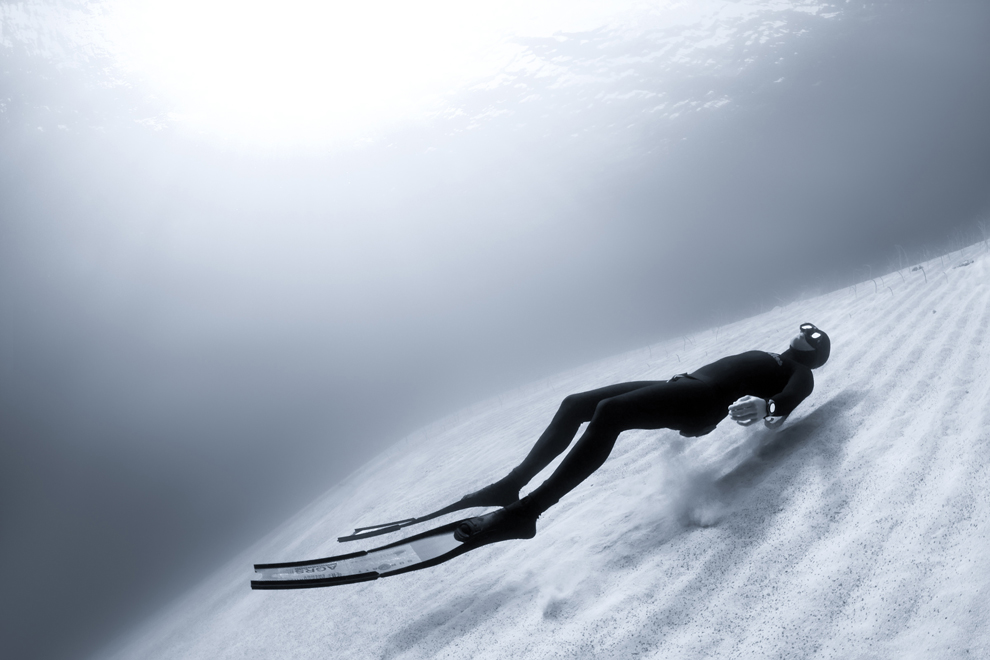

GalleryView - All Features


- 


Please view the source of this page if you are having difficulties setting up GalleryView.

Please view the source of this page if you are having difficulties setting up GalleryView.